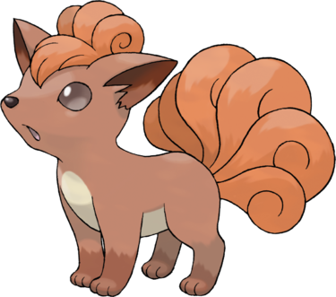

Goupix est inspiré du renard roux et du kitsune du folklore japonais, un renard à plusieurs queues capable de cracher du feu. Après une longue période, les kitsune peuvent devenir des esprits, ce qui expliquerait pourquoi Goupix est capable d'apprendre des capacités de type Spectre.